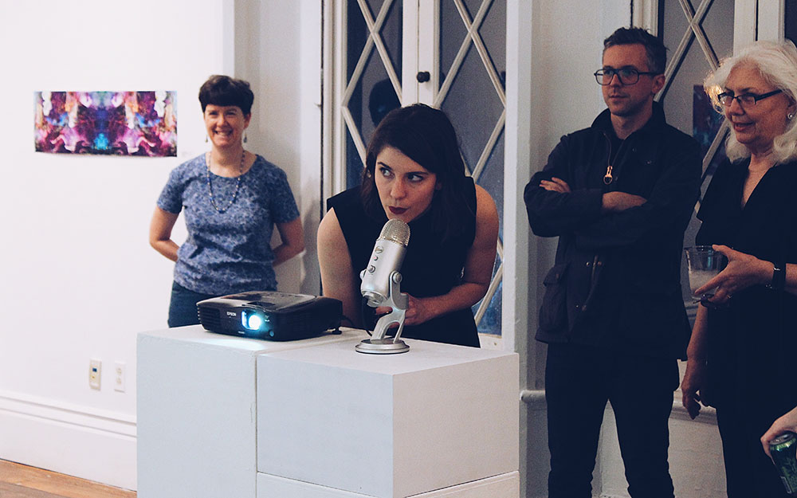
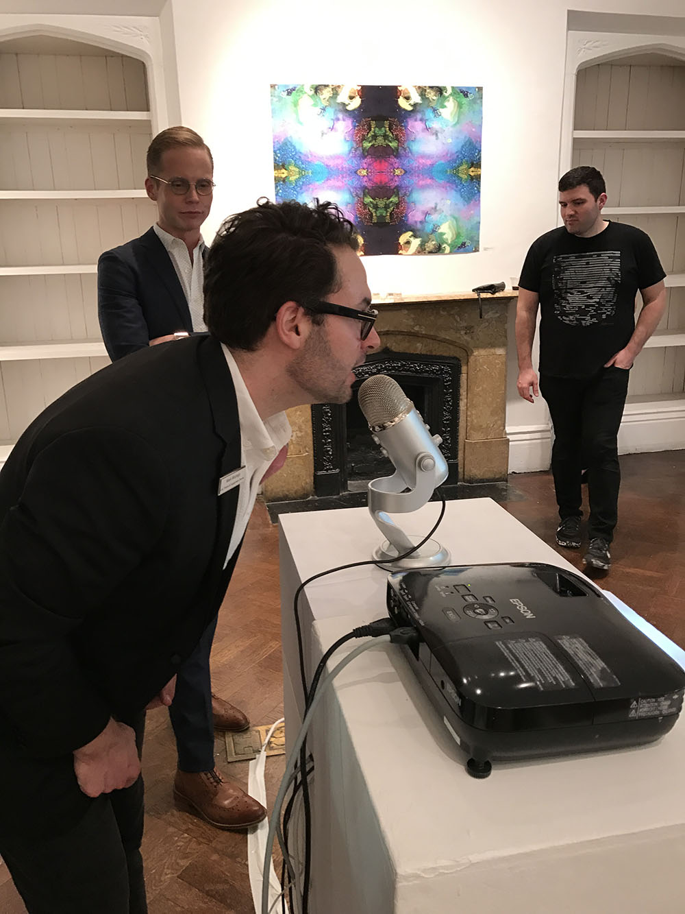

Call & Response
How does sound feel?
Call & Response is an interactive installation that translates audio into living visual responses.
Call & Response is an interactive installation that translates audio into living visual responses.
Call & Response was born from a shared love of translating audio into
visual interactions. This project was created in partnership with
Andrew Allred and Chris Wininger, and debuted earlier this year
at the Lexington Art League
as a part of the Expanding Fields Exhibition.

We were most interested in bringing this work to life and testing our theories
of interaction by having it in a public space. We found that people were
curious and willing to interact, particularly by clapping or snapping into
the microphone but shy about talking or singing.
I designed the behavior and look and feel of the installation, and relied
totally on Chris and Andrew for the engineering talent to parse audio data
into the visual signals that resulted. Read Chris' write-up about the engineering side
here.

The debut was a success and lot of fun. We got to see people interacting with
our work and learn about behaviors in the gallery setting.